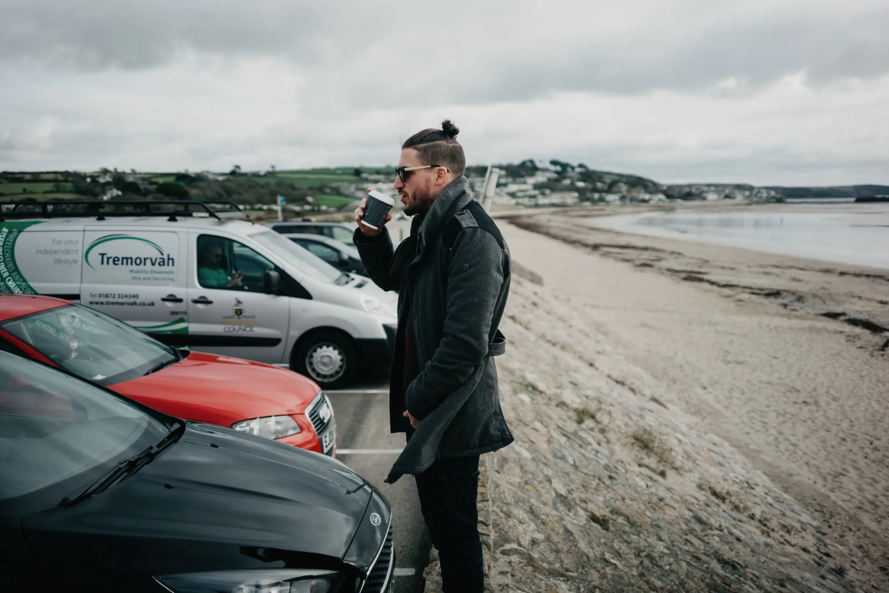

Über michAbout
Ich bin Andreas – Fotograf aus InnsbruckI'm Andreas – a photographer from Innsbruck
Ich lebe und arbeite in Tirol und kenne die Orte, an denen kleine Hochzeiten, Paarmomente und Familienbilder besonders stimmig wirken.I live and work in Tyrol and know the places where small weddings, couple moments and family pictures feel most at home.

Für mich geht es nicht darum, einzelne Momente abzuhaken, sondern euren Tag als stimmige Geschichte zu erzählen – mit Nähe, Ruhe, Licht und Persönlichkeit. Modern, emotional und ohne künstliche Inszenierung.For me it's not about ticking off single shots, but telling the story of your day – with closeness, calm, light and personality. Modern, emotional and without artificial staging.
Ich bleibe lieber leise im Hintergrund, als euch in Posen zu drängen. Die stärksten Bilder entstehen, wenn ihr euch vergesst – und genau darauf warte ich. Ein starkes Bild sagt mir mehr als drei Adjektive.I'd rather stay quietly in the background than push you into poses. The strongest pictures happen when you forget the camera – and that's exactly what I wait for. One strong image tells me more than three adjectives.
Ich spreche Deutsch und Englisch und begleite gern auch internationale Paare, die Innsbruck für ihre Trauung wählen.I speak German and English and am glad to accompany international couples who choose Innsbruck for their ceremony.

AnfrageEnquiry
Erzählt mir von euch und eurem Tag.Tell me about you and your day.
Standesamt, kleine Hochzeit, Familie oder Porträt – schreibt mir kurz, worum es geht. Ich antworte innerhalb von zwei Werktagen.Registry office, small wedding, family or portrait – tell me briefly what it's about. I reply within two working days.
Termin anfragenEnquire now